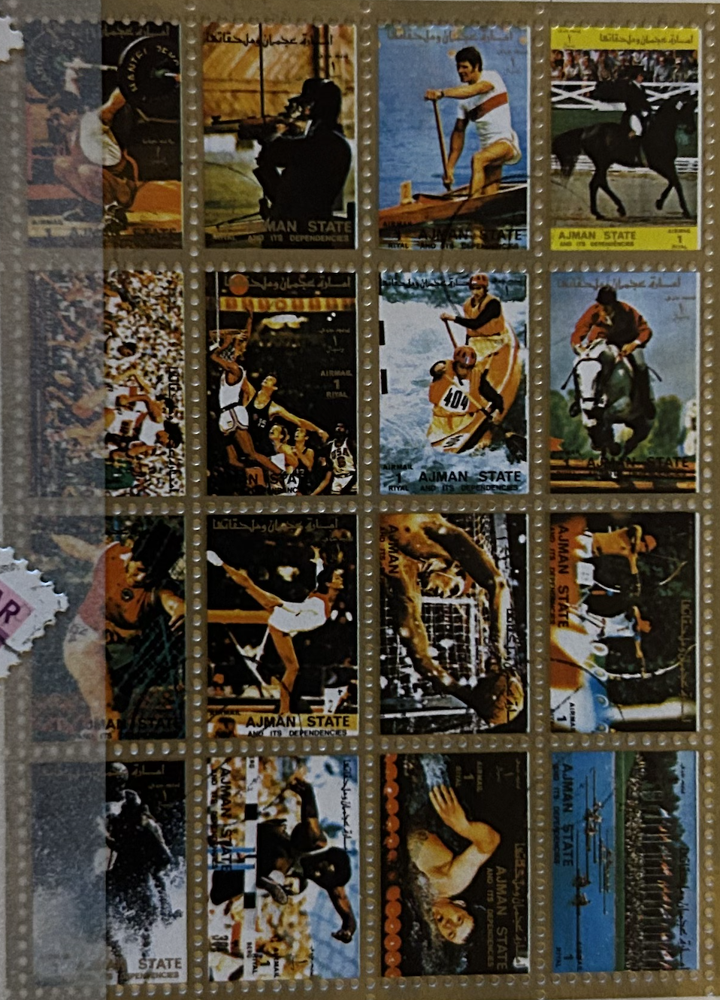
| SOURCE | TITLE| IMAGE MATCH | click to source page |
| Freestampcatalogue.com | Stamps from Ajman - Freestampcatalogue.com - The free online stampcatalogue with over 500.000 stamps listed. | 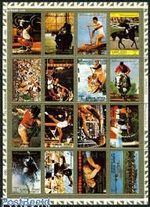 |
| eBay | 72 Ajman - SMALL FORMAT - IMPERFORATED - Olympic Games - MNH | eBay | 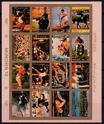 |
| eBay | Ajman 2605//2636 CTO & MH Perf Imperf Summer Olympics Sports ZAYIX 0324L0078 | eBay | 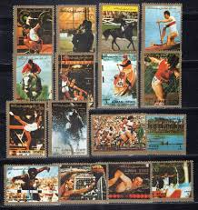 |
| rowing-memorabilia.de | Stamps by Year - 1972 | 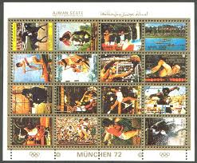 |
| rowing-memorabilia.de | Stamps by Countries - AJMAN | 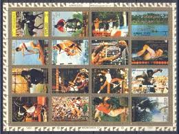 |
| eBay Australia | Ajman State Munchen Munich Olympics 1972 Stamp Sheet | eBay Australia | 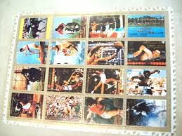 |
| eBay | AJMAN: 278 STAMPS (5 SOUVENIR SHEETS) FROM THE MIDDLE EAST COUNTRY-MINT AND USED | eBay | 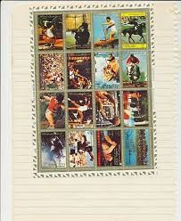 |
| eBay | Ajman 2621-2636 Sheetlet (complete issue) used 1972 Olympics Ga | eBay | 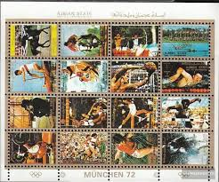 |
| Todocolección | ajman nº 2772/87, juegos olimpicos de munich, u - Buy Stamps about the Olympic Games on todocoleccion | 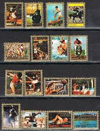 |
| Free stamp catalogue | Stamps with the theme Olympic Winter Games - Freestampcatalogue.com - The free online stampcatalogue with over 500.000 stamps listed. | 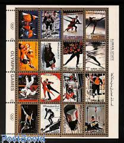 |
| eBay | UNITED ARAB EMIRATES AJMAN STATE 1972 OLYMPIC GAMES MUNICH MINI SHEET | eBay | 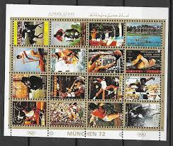 |
| postoveznamky.sk | Vaclav Nedomansky - forward (ice hockey) - www.postoveznamky.sk | 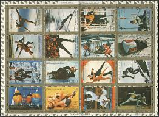 |
| eBay | Cancelled to Order/CTO Olympics Middle Eastern Stamps for sale | eBay | 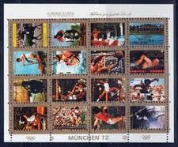 |
| eBay | Ajman Sport Olympics mini sheet 1972 | eBay | 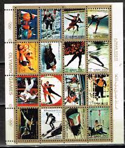 |
| eBay | Olympics United Arab Emirates Stamps for sale | eBay | 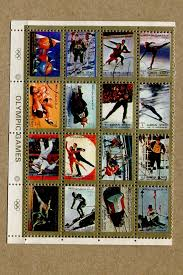 |
| eBay | UMM-AL-QIWAIN OLYMPIAD MUNICH SHEET MNH | eBay | 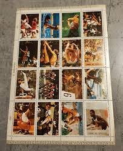 |
| eBay | Umm al Qaiwain 954A-969A Sheetlet used 1972 Olympics Summer `72 | eBay | 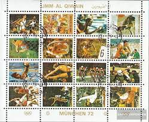 |
| eBay | UNITED ARAB EMIRATES UMM AL QIWAIN 1972 OLYMPIC GAMES MUNICH MINI SHEET | eBay | 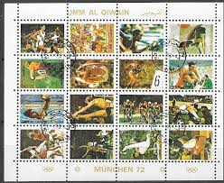 |
| Osta | Ajman " OLÜMPIAMÄNGUD " 1973 (247182469) - Osta.ee | 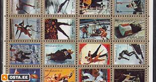 |
| eBay | OLYMPIC OF LOS ANGELES {U.S} 1984 S/S/DHUFAR {8 stamps} error perf- imperf | eBay | 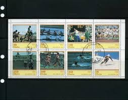 |
| eBay | GERMANY DDR 1960 Olympic Games, Full set of USED stamps, Mi.Nr. 746 - 749 | eBay | 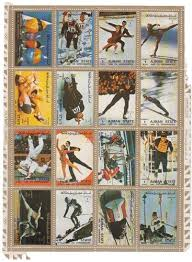 |
| DeqiStamps.com | Middle East postage Stamps | 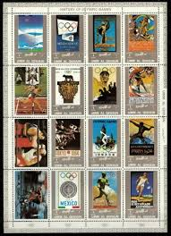 |
| eBay | O0582 AJMAN SPORT OLYMPIC GAMES HISTORY 1SH MNH | eBay | 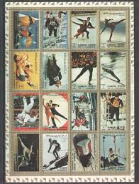 |
| eBay | 5) VARIO 4S PLUS 4 Pocket Pages for Stamps, Currency & Other Collecting, Black | eBay | 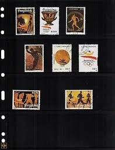 |
| eBay | Central Africa 1996 - Olympics - Sheet of 9 Stamps - Scott #1117 - MNH | eBay | 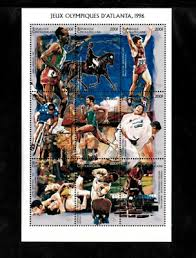 |
| Etsy | Umm Al Qiwain Stamp - Etsy | 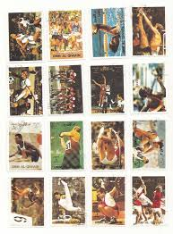 |
| eBay | 72 Ajman - SMALL FORMAT - Olympic Games - MNH | eBay | 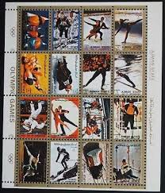 |
| eBay | Olympics 25 Cent Denomination US Stamp Sheets for sale | eBay | 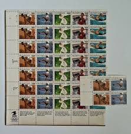 |
| eBay | Greece 1990 Homeland of the Olympic Games Unofficial FDC. VF | eBay | 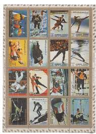 |
| eBay | POST STAMPS BLOCK (MBJJ123) OLYMPIC SPORT AJMAN STATE | eBay | 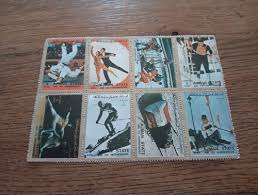 |
| HipStamp | Ajman UAE 1973 MNH Stamps Mini Sheet Mi 2717-2732 Sport Olympic Games | Middle East - United Arab Emirates, General Issue Stamp / HipStamp | 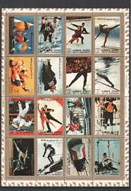 |
| eBay | Grenada 1990 - Olympic Sports - Set Of 10 Stamps - Scott #1858-62a - MNH | eBay | 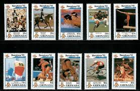 |
| HipStamp | Ajman 1973 Olympic Games Sheet of 16 Stamps Perf. MNH | Middle East - United Arab Emirates, Stamp / HipStamp | 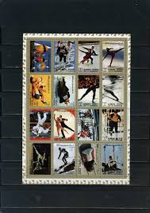 |
| eBay | UAE - Umm Al Quwain -1972 Airmail - History of Olympic Games | eBay | 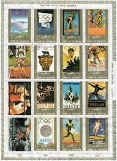 |
| eBay | OLYMPIC OF LOS ANGELES {U.S} 1984 STATE OF DHUFAR {8 stamps} S/Sheet. | eBay | 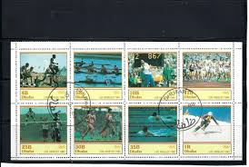 |
| eBay | NICARAGUA SUMMER OLYMPICS O254 | eBay | 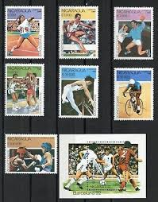 |
| Etsy | Vintage 1999, Youth Team Sports, Sheet of 20 33 Cent Postage Stamps Unused (CRMI) - Etsy | 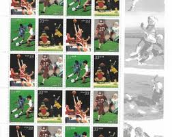 |
| eBay | DHUFAR LOS ANGLES 1984 SOUVENIR SHEET | eBay | 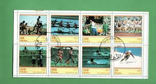 |
| eBay UK | Olympics Used United Arab Emirates Stamps for sale | eBay UK | 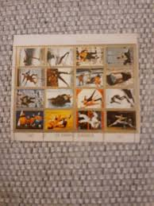 |
| eBay | SCOTLAND - OLYMPICS -MINIATURE SHEET MNH | eBay | 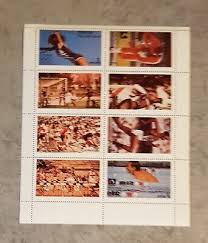 |
| eBay | OMAN 1980 OLYMPICS MOSCOW MINT VF NH O.G M/S4 (126) | eBay | 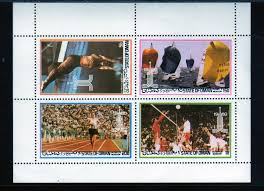 |
| eBay | NAGALAND OLYMPIAD LOS ANGELES 1984 - 10M/ SHEETS PERFORED MNH. | eBay | 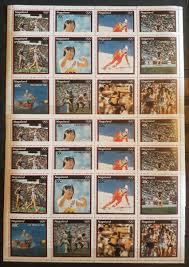 |
| eBay | F-EX30220 DOMINICA MNH 1990 OLYMPIC GAMES BARCELONA ATHLETICS EQUESTRIAN. | eBay | 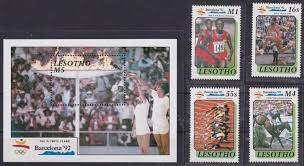 |
| eBay | 1972 Umm Al Qiwain Olympic Stamps Sheet, 16 Stamps | eBay | 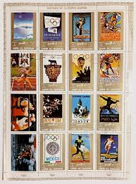 |
| eBay | 72 Umm Al Qiwain - SMALL FORMAT - Olympic Games - MNH | eBay | 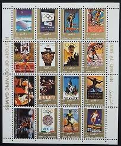 |
| postbeeld.com | Stamp 1973, Ajman Olympic games 16v, 1973 - Collecting Stamps - PostBeeld - Online Stamp Shop - Collecting | 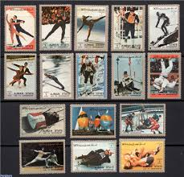 |
| Etsy | Ajman State Stamps - Etsy Sweden | 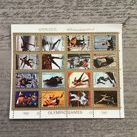 |
| eBay | United States Scott 3399-3402 Mint never hinged. | eBay | 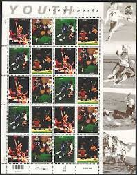 |
| eBay | Umm Al Qiwain: 16 used/CTO small stamps in sheet, Summer Olympic 1972, Mi#954-69 | eBay | 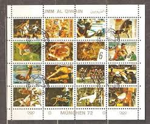 |
| eBay | Umm al-Qiwain 1971 year mint MNH(**) Michel# 466-475 Olympics | eBay | |
| eBay UK | OLYMPIC OF LOS ANGELES {U.S} 1984 STATE OF DHUFAR {8 stamps} S/Sheet. | eBay UK | |
| Free stamp catalogue | Stamps from Korea, North with the theme Sport - Freestampcatalogue.com - The free online stampcatalogue with over 500.000 stamps listed. | |
| eBay | NICARAGUA SUMMER OLYMPICS O242 | eBay | |
| lastdodo.com | Olympic Games (1976) - Cuba - LastDodo | |
| eBay | NIGER STAMP COLLECTION #115... .C370 -- 19 SETS & 3 SS -- 1940 -- MINT | eBay | |
| eBay | Korea Block 157 - 162+ Block Stamps Mint N / Olympiad 2/11426 | eBay | |
| eBay | W GAIRSAY ST 034 MS LOS ANGELES PERFORATED MINI SHEET | eBay | |
| Free stamp catalogue | Stamps from Uzbekistan - Freestampcatalogue.com - The free online stampcatalogue with over 500.000 stamps listed. | |
| eBay | Ajman 1973 used Mi.2733/48 A Klbg. Olympische Spiele Olympic Games Sport Kultur | eBay |